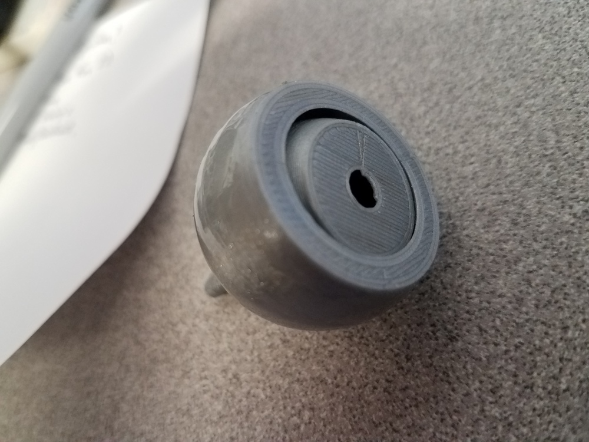
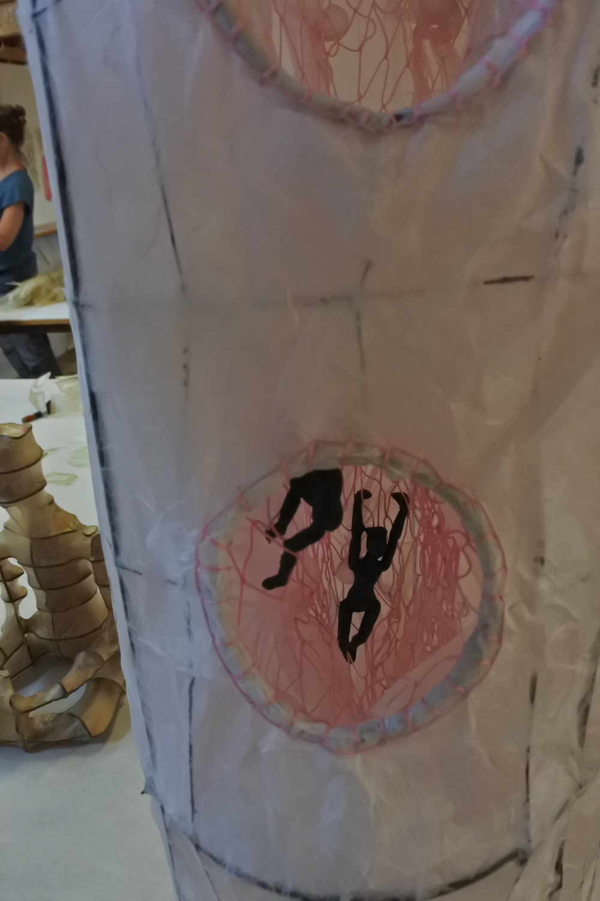
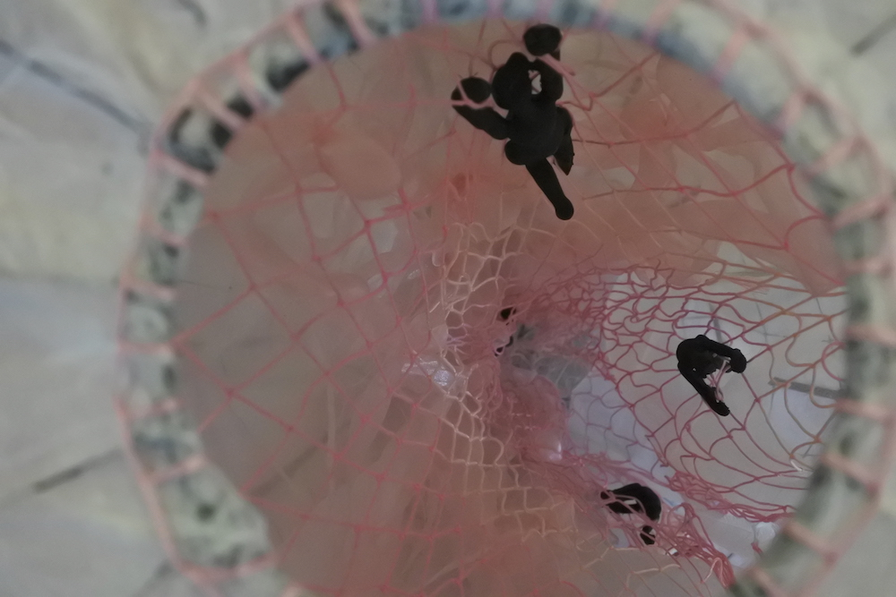

Introduction to 3D printing and Scanning
Additive Manufacturing technologies
- Filament. (Fused deposition modelling or fdm.)Prusa.
- Selective laser sintering. Powder.
- Stereolithography. Formlabs.
Applications and limitations
1. Parts for devices:


Fusion file for machine axis parts, including bearing adapter shown above. This comes from Jake Read's 2019 HTMAA machine week page.
2. Making things additively that cannot easily be made subtractively:

3. Making things additively that could easily be made subtractively:


4. Educational and art objects:
Frogs, scanned with photogrammetry, 3D printed, and painted 2018-2020 by Mara Laslo and collaborators at Natural History Museum.


Sculpture - Haystack 2016


Limitations
- Dimensional limitations
- Time limitations
- Material limitations
3D Modelling and Scanning
- Stl files
- Modeling software. Fusion and many others.
- convert Bitmap to stl via Fusion 360.
- Scanning
- Structured light Sense Scanner.
- Artek Spider high resolution scans Link to website.
- Photogrammetry: Alicevision and Meshroom.
Preparing to print
- Slicers
- Cura Use for Ultimaker and others
- Prusa Recommended for Prusa printers
- Formlabs "Preform"
- Browser-based slicers (use with caution)
- Support structures
- g code
- G-code wiki